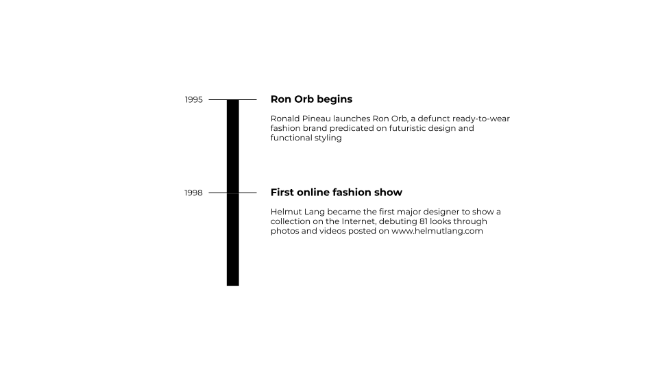
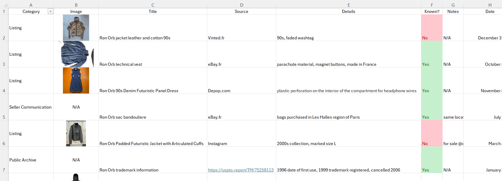
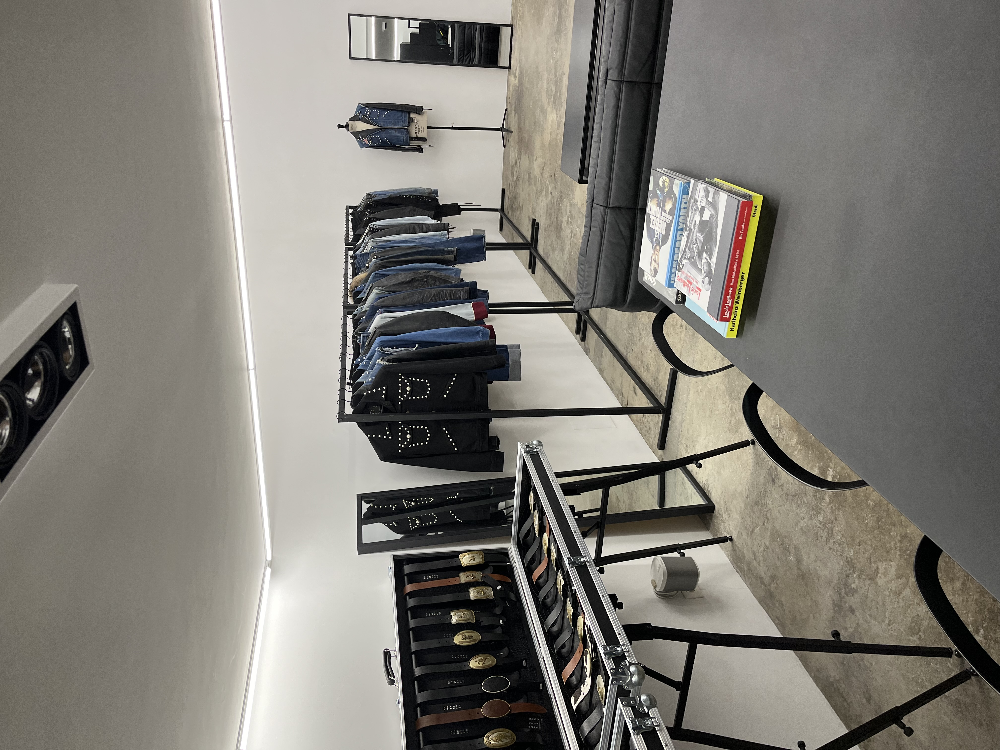
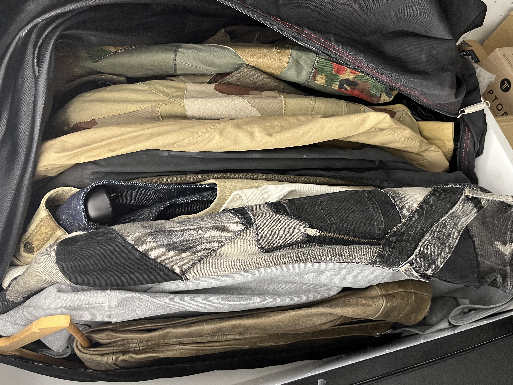

From a pre-digitization era of fashion, there are many brands whose past existence, along with evidence of collections and stories, can only be pieced together today through anecdotes and the occasional secondhand-site listing. I’m fascinated with learning more about these brands and sharing my knowledge with others who may be interested.
The first time I ever heard of Ron Orb was in 2020 through a friend who messaged me an online listing for a vintage denim jacket that he thought looked cool. I looked the brand up and couldn’t find any information besides a few other listings for different items, all of which featured a signature curved and ‘ergonomic’ design that I had never seen before in 90s clothing.
My research of the brand began with the development and deployment of an automated online marketplace alert bot in Python that could notify me in case new listings on platforms like Vinted and Depop matching the keywords “Ron Orb” were posted, eliminating the need to constantly check manually.

Being able to collect information from listings themselves, as well as reach out to the sellers who sometimes had more information about the brand, was instrumental in deepening my base understanding. Everything that I learned was recorded and organized on a spreadsheet and then marked as either assumption or fact (with confidence, not certainty), constantly building upon previous entries.

I also collected data from physical magazines that featured editorials and excerpts from the brand that I would scan and catalog. One of these magazines led me to a hidden video online that was produced by the brand, which I downloaded and shared publicly to my fashion account on Instagram.
In January 2024, I was introduced to the designer for Ron Orb through a mutual friend in Paris who used to stock his eponymous Ronald Pineau collection (post-Ron Orb) in her store. I met with Ron and shared a conversation full of insights – we even recorded an impromptu interview, select segments of which I translated and uploaded to Instagram Stories. To my knowledge (and his memory), nobody else in the last decade has reached out to him about his old label, which he prefers to leave in the past – I feel a responsibility to share what I know about Ron Orb because I might be the only person in the world who both wants to and can.


Being able to define how such an important designer’s legacy is maintained, albeit among a small community of enthusiasts, has been an intensive and rewarding experience. While I consider Ron’s collections and talent to be irreplicable, I hope to start working with or adjacent to newer creatives that excite a similar passion for innovation, artistic expression, and unique design.